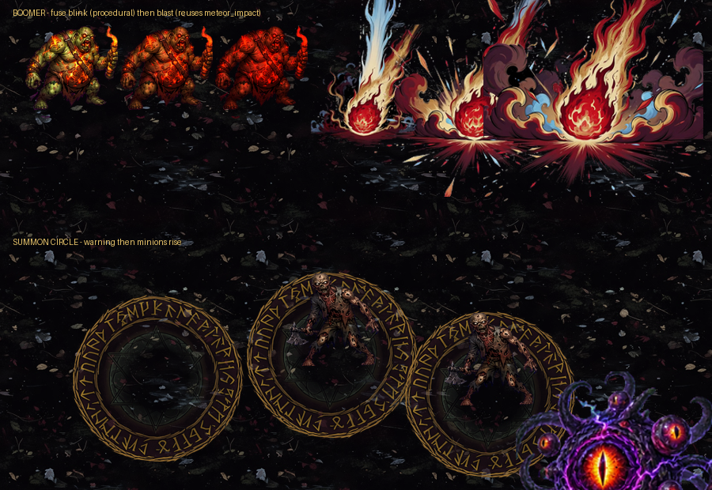

自爆引信＋爆炸／召喚法陣
等你確認
①②已收尾並 commit；剩下三項裡的兩項在下面等你確認，第三項（衝刺殘影）我判斷不需要素材。
| 情境 | 命中 | 總傷害 | 平均每次 |
|---|---|---|---|
| 滿血 HP 100/100 | 3 次 | 18.4 | 6.13 |
| 殘血 HP 15/100 | 3 次 | 3.6 | 1.20 |
高低血量的絕對值差約 5 倍，殘血時踩到不會致命，方向跟你要的一致。基準維持「當下血量」沒有換成最大血量。
百分比傷害不吃固定值護甲了。護甲是每級 -2 的固定減免，設計上是拿來擋一次幾十點的硬傷害；套在十來點的百分比傷害上，鐵制護甲 Lv5（-10）幾乎能把整個技能歸零，又會變回裝飾。減傷倍率照樣算，那本來就是比例式的。

meteor_impact。那是一支已經確認過的爆炸序列，自爆跟隕石落地本來就是同一種視覺事件，再生一支是浪費。殘影就是「把角色當下的貼圖複製幾份、往後放、逐份調淡」。用程式做的話會自動跟著魔王當下的走路幀、體型、染色走；做成固定素材反而會跟魔王本體對不上（十隻魔王長相全不一樣）。這一項我打算純程式做，不花錢。
這一輪 1 張生圖 ≈ $0.2；累計約 $6.9。沒有遇到 Grok 額度不足。
另外環狀素材第五次中同一個坑（去背後中心留成不透明近黑）。這次我在切之前就先量了，沒有再被咬到。